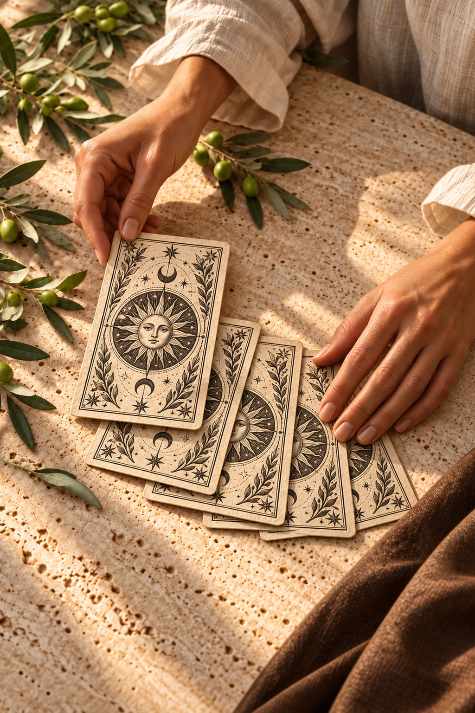
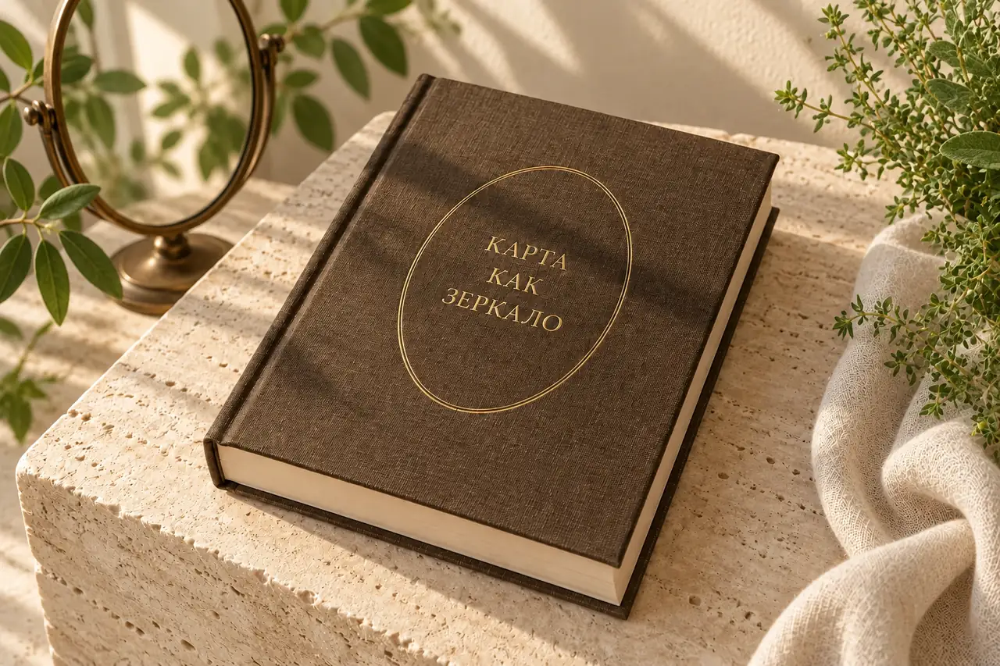
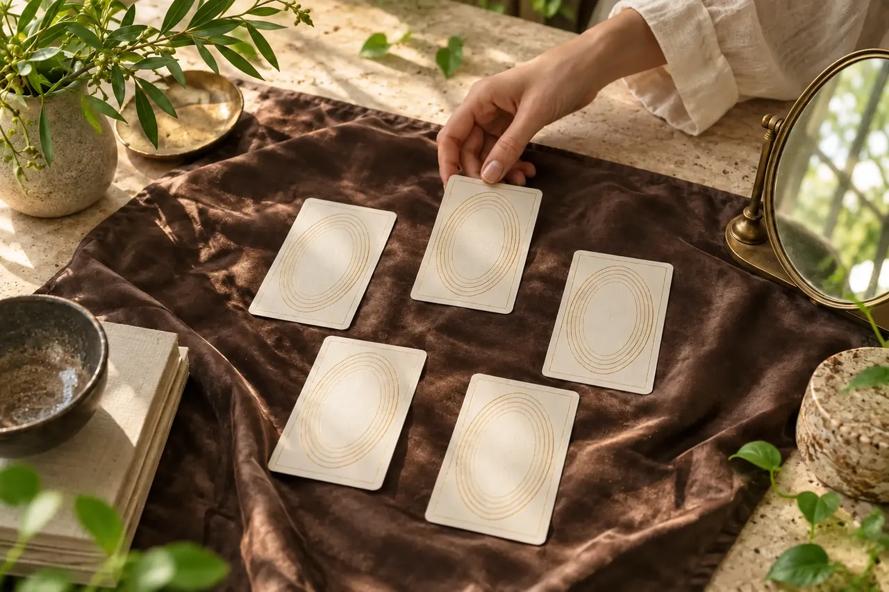
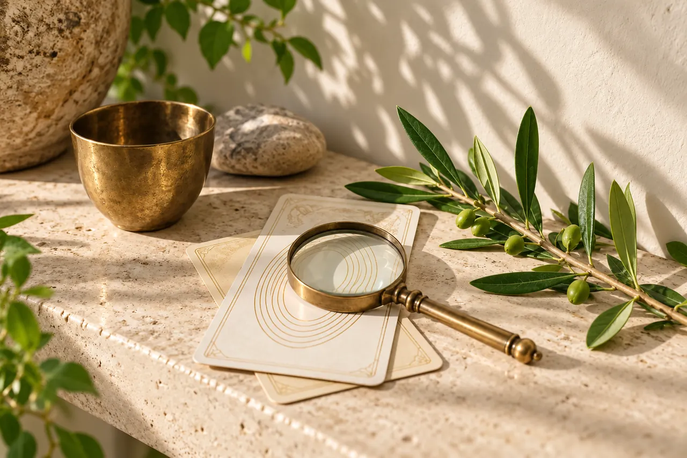
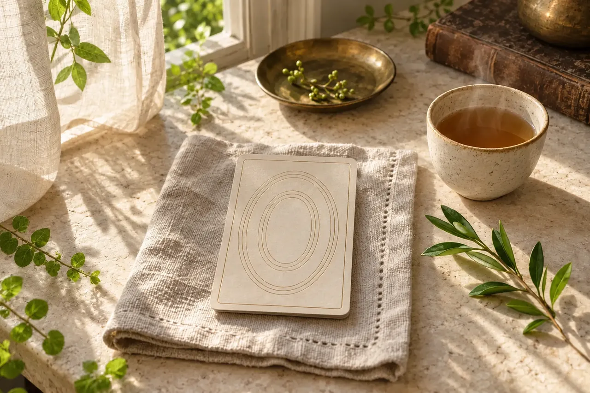

О ФОРМАТЕ
Не заучивать — понимать
В Таро мы изучаем устройство колоды и язык символов. В МАК исследуем личный отклик на изображение. В обоих направлениях учимся отделять наблюдение от предположения и сохранять свободу собственного решения.
Таро и метафорические ассоциативные карты. 48 уроков: 24 по Таро и 24 по МАК.

Два равных направления: символическая система Таро и личные ассоциации в работе с МАК. От наблюдения за образом — к ясному вопросу и собственному следующему шагу.
Арканы, масти, сочетания и осмысленное чтение раскладов.
Личные ассоциации, открытые вопросы и самостоятельная практика.
Онлайн · 48 уроков · Таро 50% / МАК 50%
Уже участвую — войти в кабинет ↗В Таро мы изучаем устройство колоды и язык символов. В МАК исследуем личный отклик на изображение. В обоих направлениях учимся отделять наблюдение от предположения и сохранять свободу собственного решения.
Шесть этапов. На каждом — четыре урока Таро и четыре урока МАК. Книга и дополнительные материалы остаются рядом с основным маршрутом.
Плановая нагрузка — по 24 часа на направление, включая чтение, практику и записи. Темп индивидуален. Для МАК можно использовать свою колоду или подходящие личные изображения.
Семь живых сцен: расклад, наблюдение, дневник, книга и работа с символом. Мягкий естественный свет и зелень связывают их в одну визуальную историю.




Смысл рождается не из отдельного значения, а из вопроса, позиции и связи карт между собой.
образ и базовый смысл
взаимодействие нескольких карт
структура позиций и контекст вопроса
Подходит начинающим и тем, кто хочет соединить знание Таро с аккуратной работой с МАК. Две итоговые работы: по одной на каждое направление.